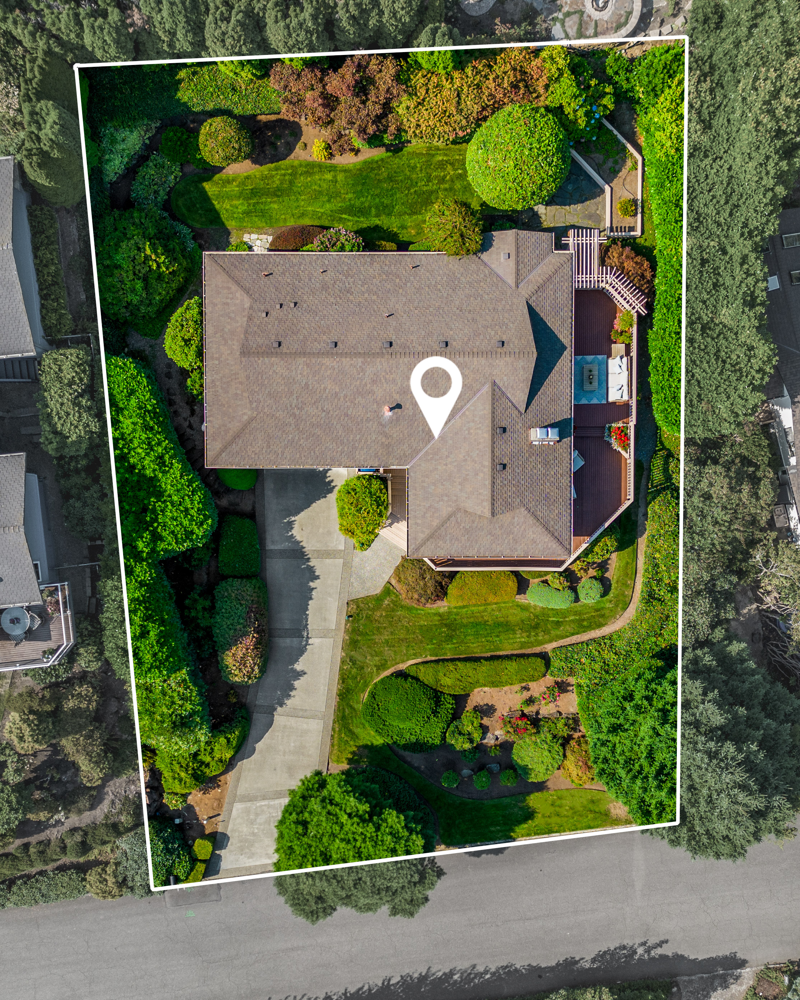

<div class="container">
  <section class="hero">
    <div class="hero-details">
      <div class="details_container">
        <div class="left">
          
        </div>
        <div class="right">
          <div class="top-paragraph hero-subtitle">AERIAL COLLECTION</div>
          <div class="bottom-paragraph roboto-slab-about">Aerial photography and video have gained popularity in real estate for their unique ability to offer a different perspective of properties. Drones enable us to capture stunning footage from above, showcasing distinctive features of a property from a bird's-eye view.
<br><br>
            By capturing aerial footage of the neighborhood and landmarks, agents facilitate potential buyers in comprehending the property's location and its exceptional surroundings.<br><br>
            <a href="#" class="about-link">View Gallery</a>
            <div class="small-image">
              
            </div></div>

        </div>
      </div>
    </div>

  </section>
  </div>
